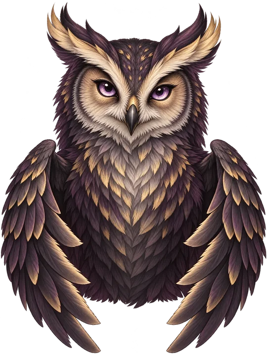

Frage wird geladen …
Wähle eine Antwort.
DEIN TEICH · SAISON 01
Sammle Energie für Entscheidungen, Wasser für Wachstum, Luft für Bewegung und Liebe für Vertrauen in deiner kleinen Teichwelt.
DEIN BAUPLATZ · 10 × 10
Wähle ein Gebäude und danach ein freies Feld. Der Teichkern in der Mitte bleibt frei.
← Raster seitlich wischen →
Steht das Quellbecken nahe bei der Solar-Seerose oder dem Schilf-Windrad, produzieren diese automatisch mehr. Goldene Felder zeigen passende Plätze.
Gebäude produzieren von selbst – auch offline. Bis zu 8 Stunden sammeln sich an; bei 2.000 pro Ressource stoppt die Produktion. Bestehende Quizressourcen bleiben erhalten.
WACHSTUMSKARTE
WAS MÖCHTEST DU TUN?
Demo-Slice · offline spielbar · dein Teich bleibt auf diesem Gerät

QUIZDUELL · 10 RUNDEN
Drei Füchse, drei Taktiken. Wen forderst du heraus?
BEREIT MACHEN
ROTFUCHS
Der Rotfuchs liest deine erste Entscheidung. Finde deinen Rhythmus.
Das Duell beginnt gleich.
Die Eule beobachtet deine Antworten.
ROUND RESULT
RESSOURCEN GESAMMELT
Wähle eine Anpassung für dein nächstes Quizduell.